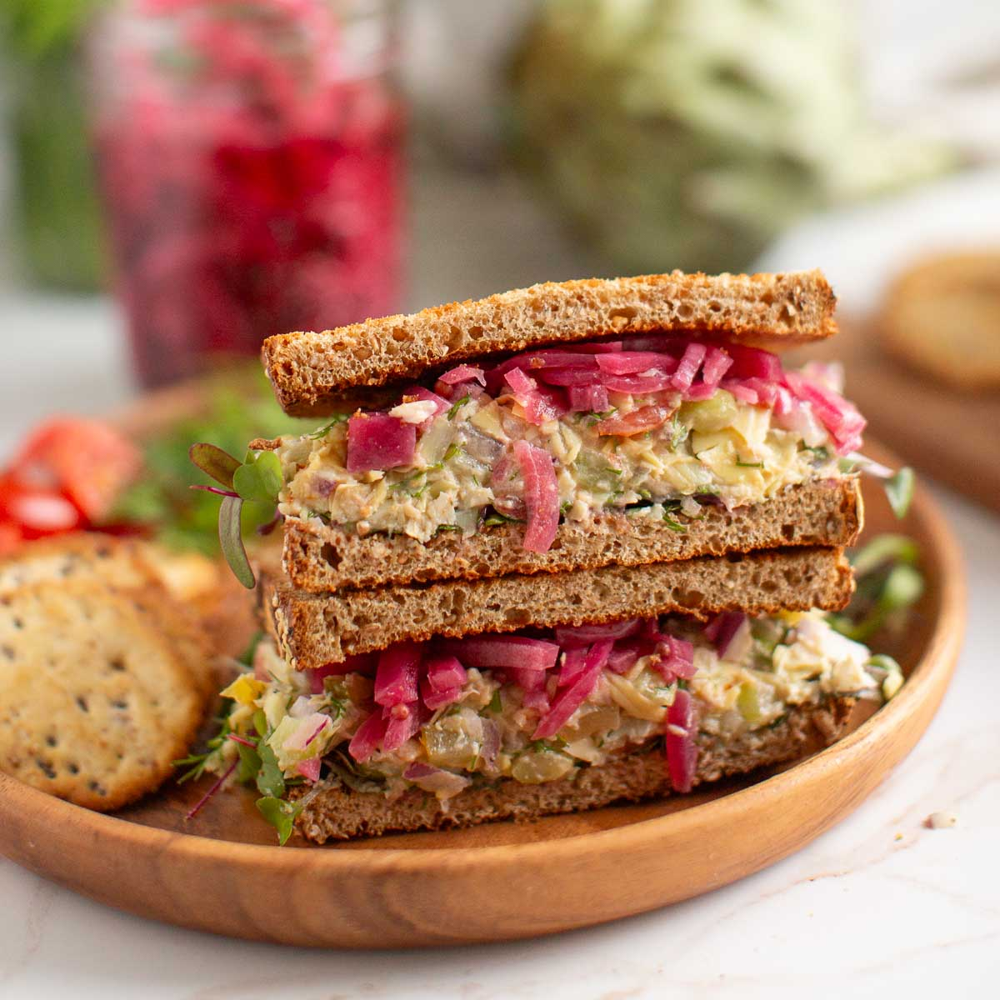

Tuna Artichoke Salad is a light and refreshing dish that combines tender tuna with flavorful artichoke hearts. Mixed with a few simple ingredients, it is quick to prepare and makes a healthy lunch, side dish, or easy meal. Its fresh taste and satisfying texture make it a great choice for any occasion.